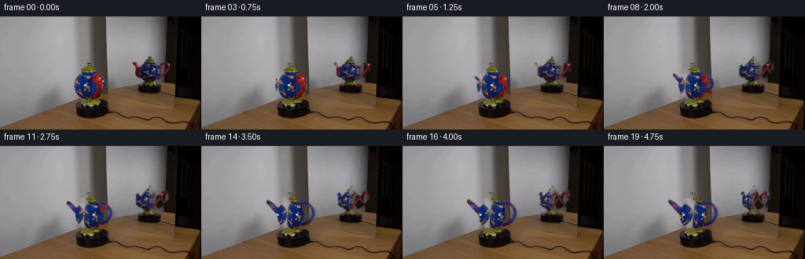
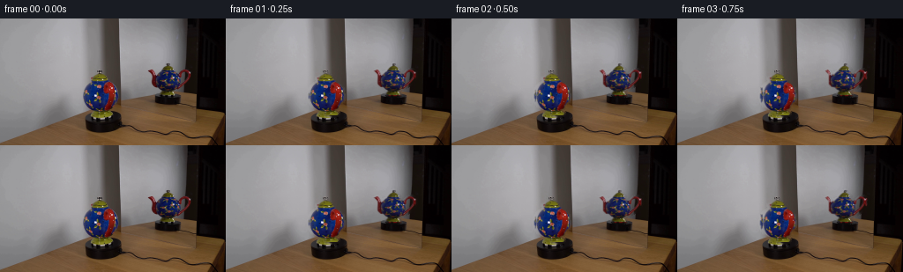

CODING AGENTS AS PIXEL WORLD MODELS
traex/GPT-5.6-Sol · 0122
点击播放 · 原生 RGB 像素
逐轮保存的候选
回放视频、检查图与代码变化。
每份候选均可单独播放。实际图片检查记录在下方工具轨迹中。
候选 01播放与检查图
点击播放 · 原生 RGB 像素


展开代码变化
--- 上一保存版本
+++ 本次保存版本
@@ -0,0 +1,198 @@
+"""Analytic turntable animation made only from the supplied first frame.
+
+The ceramic body and its mirror image are separated from the locked-off scene,
+the exposed background is reconstructed locally, and the objects are projected
+through a simple cylindrical yaw model. A spout and handle emerge from the
+nearly end-on initial view as the pot turns.
+"""
+from pathlib import Path
+import cv2
+import numpy as np
+from PIL import Image
+import artifact_io
+
+ROOT = Path(__file__).resolve().parent
+H, W = 144, 256
+
+
+def grab_object(rgb, rect, iterations=9):
+ """GrabCut initialized by a conservative rectangle; return soft matte."""
+ bgr = rgb[:, :, ::-1].copy()
+ labels = np.zeros((H, W), np.uint8)
+ bg = np.zeros((1, 65), np.float64)
+ fg = np.zeros((1, 65), np.float64)
+ cv2.grabCut(bgr, labels, rect, bg, fg, iterations, cv2.GC_INIT_WITH_RECT)
+ hard = np.uint8((labels == cv2.GC_FGD) | (labels == cv2.GC_PR_FGD))
+ # Keep only useful components (the one object can contain tiny detached lid pixels).
+ n, lab, stats, _ = cv2.connectedComponentsWithStats(hard, 8)
+ keep = np.zeros_like(hard)
+ for i in range(1, n):
+ if stats[i, cv2.CC_STAT_AREA] >= 2:
+ keep[lab == i] = 1
+ # Subpixel edge: retain the solid center and one softly antialiased edge pixel.
+ matte = cv2.GaussianBlur(keep.astype(np.float32), (0, 0), 0.72)
+ matte = np.clip((matte - .045) / .90, 0, 1)
+ return keep, matte
+
+
+def reflect_coord(a, lo, hi):
+ """Mirror coordinates repeatedly into [lo, hi]."""
+ span = max(1.0, hi - lo)
+ q = np.mod(a - lo, 2 * span)
+ return lo + np.where(q <= span, q, 2 * span - q)
+
+
+def projected_layer(src, matte, bbox, scale, phase, vertical=0.0, reflection=False):
+ """Project the cutout after yaw: silhouette scales, surface pattern travels."""
+ x, y, w, h = bbox
+ cx = x + (w - 1) * .5
+ cy = y + (h - 1) * .5
+ yy, xx = np.mgrid[0:H, 0:W].astype(np.float32)
+
+ # Matte follows geometry. Texture has an additional phase shift, strongest
+ # around the broad middle and weak at lid/base, as on a rotating round pot.
+ mx = cx + (xx - cx) / scale
+ my = yy - vertical
+ weight = np.sin(np.clip((my - y) / max(1, h - 1), 0, 1) * np.pi) ** .7
+ direction = 1.0 if reflection else -1.0
+ tx = mx + direction * phase * w * weight
+ tx = reflect_coord(tx, x, x + w - 1).astype(np.float32)
+ mx = mx.astype(np.float32)
+ my = my.astype(np.float32)
+
+ tex = cv2.remap(src, tx, my, cv2.INTER_CUBIC,
+ borderMode=cv2.BORDER_REFLECT_101)
+ a = cv2.remap(matte, mx, my, cv2.INTER_LINEAR,
+ borderMode=cv2.BORDER_CONSTANT, borderValue=0)
+ # Keep remapped texture completely inside its own transformed matte.
+ a = np.clip(a, 0, 1)
+ return tex, a
+
+
+def composite(dst, layer, alpha):
+ a = alpha[:, :, None]
+ return dst * (1.0 - a) + layer.astype(np.float32) * a
+
+
+def colored_appendages(src, body_hard, amount):
+ """Procedural profile elements, hidden behind the body at amount == 0."""
+ if amount <= 0.002:
+ return np.zeros((H, W, 3), np.float32), np.zeros((H, W), np.float32)
+ S = 4
+ mask = np.zeros((H*S, W*S), np.uint8)
+ a = float(amount)
+
+ def P(final, origin):
+ return tuple(int(round((origin[i] + a * (final[i] - origin[i])) * S)) for i in (0, 1))
+
+ # Spout: a gently upturned tapered tube, attached behind the left shoulder.
+ origin = (100, 83)
+ final_poly = [(101, 78), (96, 77), (86, 68), (82, 68),
+ (83, 73), (93, 84), (99, 89), (103, 87)]
+ poly = np.array([P(q, origin) for q in final_poly], np.int32)
+ cv2.fillPoly(mask, [poly], 255, lineType=cv2.LINE_AA)
+ # Dark opening at the tip will be composited as a low-alpha dark detail.
+
+ # Arched handle on the opposite side. Drawing a thick cubic Bezier gives a
+ # more teapot-like loop than a plain ellipse, and it unfolds continuously.
+ pts = []
+ p0=np.array((127.,72.)); p1=np.array((146.,70.)); p2=np.array((149.,96.)); p3=np.array((128.,100.))
+ for t in np.linspace(0,1,70):
+ q=(1-t)**3*p0+3*(1-t)**2*t*p1+3*(1-t)*t*t*p2+t**3*p3
+ q=np.array((128.,86.))+a*(q-np.array((128.,86.)))
+ pts.append(np.round(q*S).astype(np.int32))
+ cv2.polylines(mask,[np.array(pts)],False,255,max(2,int(round((2.4+1.0*a)*S))),cv2.LINE_AA)
+
+ alpha = mask.astype(np.float32)/255.0
+ alpha = cv2.GaussianBlur(alpha,(0,0),.34*S)[::S,::S]
+ alpha = np.clip(alpha,0,1)
+
+ # Row-wise ceramic colors sampled from the actual pot, with fixed studio
+ # lighting and a narrow glossy highlight along each new curved surface.
+ out = np.zeros((H,W,3),np.float32)
+ for yy in range(H):
+ pix=src[yy][body_hard[yy]>0]
+ if len(pix):
+ base=np.median(pix,axis=0)
+ else:
+ base=np.array((55,43,48),np.float32)
+ out[yy,:,:]=base
+ xx=np.arange(W,dtype=np.float32)[None,:]
+ gloss=(18*np.exp(-((xx-89)/3.0)**2)+12*np.exp(-((xx-141)/2.8)**2))[:,:,None]
+ out=np.clip(out+gloss,0,255)
+ # Slightly shade lower-facing portions.
+ out *= (0.96 + 0.07*np.clip((92-np.arange(H)[:,None,None])/32,-.4,.6))
+ return out, alpha
+
+
+def make_frames():
+ src = np.asarray(Image.open(ROOT/'first_frame.png').convert('RGB'), dtype=np.uint8)
+ if src.shape != (H,W,3):
+ raise ValueError(f'first_frame.png has unexpected shape {src.shape}')
+
+ main_hard, main_a = grab_object(src, (91, 60, 50, 51))
+ refl_hard, refl_a = grab_object(src, (163, 48, 62, 63))
+
+ def bbox(mask, pad=0):
+ ys,xs=np.nonzero(mask)
+ return (int(xs.min()-pad),int(ys.min()-pad),
+ int(xs.max()-xs.min()+1+2*pad),int(ys.max()-ys.min()+1+2*pad))
+ mb=bbox(main_hard); rb=bbox(refl_hard)
+
+ # Remove both original appearances once, preserving all fixed geometry,
+ # including platform edge and mirror frame outside a small dilated matte.
+ removal = np.uint8((main_hard | refl_hard) * 255)
+ removal = cv2.dilate(removal, cv2.getStructuringElement(cv2.MORPH_ELLIPSE,(5,5)))
+ base = cv2.inpaint(src[:,:,::-1], removal, 5, cv2.INPAINT_TELEA)[:,:,::-1].astype(np.float32)
+
+ frames=[src.copy()]
+ for i in range(1,20):
+ # Smooth constant-rate yaw with no camera or temporal easing. The tiny
+ # phase offset at frame 1 avoids an implausible frozen duplicate.
+ theta=np.deg2rad(100.0*i/19.0)
+ side=np.sin(theta)
+ scale_main=1.0-0.14*side*side
+ phase_main=0.44*(theta/(np.pi/2))
+
+ # The angled mirror starts from a side-biased view. As the real teapot
+ # turns clockwise, its reflected profile progresses through and beyond
+ # broadside; apparent surface motion is reversed by reflection.
+ phi=np.deg2rad(70.0)+theta
+ profile=abs(np.sin(phi))
+ scale_refl=0.73+0.27*profile
+ phase_refl=0.34*(theta/(np.pi/2))
+
+ canvas=base.copy()
+ rtex,ra=projected_layer(src,refl_a,rb,scale_refl,phase_refl,
+ vertical=0.0,reflection=True)
+ # Mirror glass lowers contrast and adds a fractional soft optical veil.
+ local_gray=cv2.GaussianBlur(rtex,(0,0),.45)
+ rtex=np.clip(.88*rtex+.12*local_gray,0,255)
+ canvas=composite(canvas,rtex,ra*.94)
+
+ append,aa=colored_appendages(src,main_hard,side)
+ canvas=composite(canvas,append,aa)
+ mtex,ma=projected_layer(src,main_a,mb,scale_main,phase_main,
+ vertical=0.0,reflection=False)
+ canvas=composite(canvas,mtex,ma)
+
+ # Tip opening, only once the spout turns sufficiently into profile.
+ if side>.22:
+ cx=100+side*(83-100); cy=83+side*(70-83)
+ tip=np.zeros((H,W),np.float32)
+ cv2.ellipse(tip,(int(round(cx)),int(round(cy))),
+ (max(1,int(round(1.8*side))),max(1,int(round(2.4*side)))),
+ -35,0,360,float(.55*side),-1,cv2.LINE_AA)
+ dark=np.zeros_like(canvas)+np.array((18,15,18),np.float32)
+ canvas=composite(canvas,dark,tip)
+
+ frames.append(np.clip(np.rint(canvas),0,255).astype(np.uint8))
+
+ out=np.stack(frames)
+ # Contract invariant: no processing may touch the supplied first frame.
+ out[0]=src
+ return out
+
+
+if __name__ == '__main__':
+ artifact_io.save(make_frames(), ROOT)
候选 02播放与检查图
点击播放 · 原生 RGB 像素
展开代码变化
--- 上一保存版本
+++ 本次保存版本
@@ -53,7 +53,7 @@
# around the broad middle and weak at lid/base, as on a rotating round pot.
mx = cx + (xx - cx) / scale
my = yy - vertical
- weight = np.sin(np.clip((my - y) / max(1, h - 1), 0, 1) * np.pi) ** .7
+ weight = np.maximum(0.0, np.sin(np.clip((my - y) / max(1, h - 1), 0, 1) * np.pi)) ** .7
direction = 1.0 if reflection else -1.0
tx = mx + direction * phase * w * weight
tx = reflect_coord(tx, x, x + w - 1).astype(np.float32)
候选 03播放与检查图
可观测工具轨迹
实际执行的命令与返回图片。
命令 1exit 127
/bin/bash -lc "ls -lah && file first_frame.png && python3 - <<'PY'
from PIL import Image
im=Image.open('first_frame.png')
print(im.mode, im.size)
PY"命令 2exit 0
/bin/bash -lc "cat GENERATION_RULES.md && printf '\\n---PROMPT---\\n' && cat prompt.txt"
命令 3exit 0
/bin/bash -lc "python3 - <<'PY'
from PIL import Image
import numpy as np
im=np.array(Image.open('first_frame.png').convert('RGB'))
print(im.shape, im.min(), im.max(), im.mean((0,1)), im.std((0,1)))
# cell average brightness/color 16x9
for y in range(0,144,8):
row=[]
for x in range(0,256,8):
a=im[y:y+8,x:x+8].mean((0,1)); row.append('%02x%02x%02x'%tuple(a.astype(int)))
print(' '.join(row))
PY"命令 4exit 0
/bin/bash -lc "python3 - <<'PY'
try:
import cv2; print('cv2',cv2.__version__)
except Exception as e: print(e)
try:
import scipy; print('scipy',scipy.__version__)
except Exception as e: print(e)
PY
python3 - <<'PY'
from PIL import Image
import numpy as np
from sklearn.cluster import KMeans
im=np.array(Image.open('first_frame.png').convert('RGB'))
# kmeans colors, subsample
X=im.reshape(-1,3)
k=KMeans(12,random_state=0,n_init=5).fit(X[::4])
labels=k.predict(X).reshape(144,256)
cent=k.cluster_centers_
order=np.argsort(cent.mean(1)); mp={v:i for i,v in enumerate(order)}
chars='0123456789AB'
print([(chars[mp[i]],np.round(cent[i]).astype(int).tolist(),int((labels==i).sum())) for i in order])
# majority at 4x4
for y in range(0,144,4):
row=''
for x in range(0,256,4):
a=labels[y:y+4,x:x+4].ravel(); lab=np.bincount(a,minlength=12).argmax(); row+=chars[mp[lab]]
print(row)
PY"命令 5exit 1
/bin/bash -lc "python3 - <<'PY'
import cv2, numpy as np
from PIL import Image
im=np.array(Image.open('first_frame.png').convert('RGB'))
hsv=cv2.cvtColor(im,cv2.COLOR_RGB2HSV)
for name,m in {
'blue':((hsv[:,:,0]>100)&(hsv[:,:,0]<140)&(hsv[:,:,1]>60)),
'red':(((hsv[:,:,0]<10)|(hsv[:,:,0]>170))&(hsv[:,:,1]>80)),
'brown':((hsv[:,:,0]>5)&(hsv[:,:,0]<30)&(hsv[:,:,1]>50)),
'neutral_dark':((hsv[:,:,1]<50)&(hsv[:,:,2]<70)),
}.items():
n, lab, stats, cen=cv2.connectedComponentsWithStats(m.astype('uint8'),8)
print('\\n',name, int(m.sum()))
for s,c in sorted(zip(stats[1:],cen[1:]),key=lambda z:-z[0,4])[:15]: print(s.tolist(),np.round(c,1))
PY"命令 6exit 0
/bin/bash -lc "python3 - <<'PY'
import cv2, numpy as np
from PIL import Image
im=np.array(Image.open('first_frame.png').convert('RGB')); hsv=cv2.cvtColor(im,cv2.COLOR_RGB2HSV)
for name,m in {'blue':((hsv[:,:,0]>100)&(hsv[:,:,0]<140)&(hsv[:,:,1]>60)),'red':(((hsv[:,:,0]<10)|(hsv[:,:,0]>170))&(hsv[:,:,1]>80)),'brown':((hsv[:,:,0]>5)&(hsv[:,:,0]<30)&(hsv[:,:,1]>50)),'neutral_dark':((hsv[:,:,1]<50)&(hsv[:,:,2]<70))}.items():
n, lab, stats, cen=cv2.connectedComponentsWithStats(m.astype('uint8'),8)
print('\\n',name, int(m.sum()))
for idx in sorted(range(1,n),key=lambda i:-stats[i,4])[:15]: print(stats[idx].tolist(),np.round(cen[idx],1))
PY"命令 7exit 1
/bin/bash -lc "python3 - <<'PY'
from PIL import Image
import numpy as np
im=np.array(Image.open('first_frame.png').convert('RGB'))
V=im.mean(2)
for y in range(0,144,4):
# runs v<60
m=V[y:y+4].mean(0)<60
runs=[]; st=None
for x,z in enumerate(np.r_[m,False]):
if z and st is None: st=x
if not z and st is not None:
if x-st>=2:runs.append((st,x-1,round(V[y:y+4,st:x].mean())))
st=None
# colorful saturation rough
mx=im[y:y+4].max((0)); mn=im[y:y+4].min((0)); sat=mx-mn>40
rr=[];st=None
for x,z in enumerate(np.r_[sat,False]):
if z and st is None:st=x
if not z and st is not None:
if x-st>=2:rr.append((st,x-1))
st=None
print(f'{y:3}',runs,'color',rr)
PY"命令 8exit 0
/bin/bash -lc "python3 - <<'PY'
from PIL import Image
import numpy as np, cv2
im=np.array(Image.open('first_frame.png').convert('RGB')); h=cv2.cvtColor(im,cv2.COLOR_RGB2HSV); H,S,V=[h[:,:,i] for i in range(3)]
for y in range(0,144,4):
def runs(m):
out=[]; st=None
for x,z in enumerate(np.r_[m,False]):
if z and st is None: st=x
elif not z and st is not None:
if x-st>=2:out.append(f'{st}-{x-1}')
st=None
return ','.join(out)
print(f'{y:3} D[{runs((V[y:y+4].mean(0)<60))}] B[{runs((((H[y:y+4]>100)&(H[y:y+4]<140)&(S[y:y+4]>70)).sum(0)>=2))}] R[{runs(((((H[y:y+4]<10)|(H[y:y+4]>170))&(S[y:y+4]>90)).sum(0)>=2))}]')
PY"命令 9exit 0
/bin/bash -lc "cat > .tmp/testseg.py <<'PY'
import cv2, numpy as np
from PIL import Image
im=np.array(Image.open('first_frame.png').convert('RGB'))
bgr=im[:,:,::-1].copy()
for name,rect in [('main',(93,64,47,45)),('refl',(165,51,57,56))]:
mask=np.zeros(im.shape[:2],np.uint8)
bg=np.zeros((1,65),np.float64); fg=np.zeros((1,65),np.float64)
cv2.grabCut(bgr,mask,rect,bg,fg,8,cv2.GC_INIT_WITH_RECT)
m=((mask==1)|(mask==3)).astype(np.uint8)
n,lab,stats,cen=cv2.connectedComponentsWithStats(m,8)
print(name,m.sum(),sorted([s.tolist() for s in stats[1:]],key=lambda s:-s[4])[:10])
cv2.imwrite('.tmp/'+name+'.png',m*255)
PY
python3 .tmp/testseg.py"命令 10exit 0
/bin/bash -lc "sed -n '1,240p' artifact_io.py"
命令 11exit 0
/bin/bash -lc "python3 - <<'PY'
import cv2,numpy as np
from PIL import Image
im=np.array(Image.open('first_frame.png').convert('RGB')); bgr=im[:,:,::-1].copy()
for name,rect in [('main',(91,62,50,49)),('refl',(163,48,61,62))]:
mask=np.zeros(im.shape[:2],np.uint8); bg=np.zeros((1,65),np.float64);fg=np.zeros((1,65),np.float64)
cv2.grabCut(bgr,mask,rect,bg,fg,8,cv2.GC_INIT_WITH_RECT);m=((mask==1)|(mask==3)).astype(np.uint8)
x,y,w,h=cv2.boundingRect(m)
print(name,(x,y,w,h))
mm=m[y:y+h,x:x+w]
# 2x2 ascii
for yy in range(0,h,2):
print(''.join('#' if mm[yy:yy+2,xx:xx+2].mean()>.25 else ' ' for xx in range(0,w,2)))
print()
PY"命令 12exit 0
/bin/bash -lc "cat > generate.py <<'PY'
\"\"\"Analytic turntable animation made only from the supplied first frame.
The ceramic body and its mirror image are separated from the locked-off scene,
the exposed background is reconstructed locally, and the objects are projected
through a simple cylindrical yaw model. A spout and handle emerge from the
nearly end-on initial view as the pot turns.
\"\"\"
from pathlib import Path
import cv2
import numpy as np
from PIL import Image
import artifact_io
ROOT = Path(__file__).resolve().parent
H, W = 144, 256
def grab_object(rgb, rect, iterations=9):
\"\"\"GrabCut initialized by a conservative rectangle; return soft matte.\"\"\"
bgr = rgb[:, :, ::-1].copy()
labels = np.zeros((H, W), np.uint8)
bg = np.zeros((1, 65), np.float64)
fg = np.zeros((1, 65), np.float64)
cv2.grabCut(bgr, labels, rect, bg, fg, iterations, cv2.GC_INIT_WITH_RECT)
hard = np.uint8((labels == cv2.GC_FGD) | (labels == cv2.GC_PR_FGD))
# Keep only useful components (the one object can contain tiny detached lid pixels).
n, lab, stats, _ = cv2.connectedComponentsWithStats(hard, 8)
keep = np.zeros_like(hard)
for i in range(1, n):
if stats[i, cv2.CC_STAT_AREA] >= 2:
keep[lab == i] = 1
# Subpixel edge: retain the solid center and one softly antialiased edge pixel.
matte = cv2.GaussianBlur(keep.astype(np.float32), (0, 0), 0.72)
matte = np.clip((matte - .045) / .90, 0, 1)
return keep, matte
def reflect_coord(a, lo, hi):
\"\"\"Mirror coordinates repeatedly into [lo, hi].\"\"\"
span = max(1.0, hi - lo)
q = np.mod(a - lo, 2 * span)
return lo + np.where(q <= span, q, 2 * span - q)
def projected_layer(src, matte, bbox, scale, phase, vertical=0.0, reflection=False):
\"\"\"Project the cutout after yaw: silhouette scales, surface pattern travels.\"\"\"
x, y, w, h = bbox
cx = x + (w - 1) * .5
cy = y + (h - 1) * .5
yy, xx = np.mgrid[0:H, 0:W].astype(np.float32)
# Matte follows geometry. Texture has an additional phase shift, strongest
# around the broad middle and weak at lid/base, as on a rotating round pot.
mx = cx + (xx - cx) / scale
my = yy - vertical
weight = np.sin(np.clip((my - y) / max(1, h - 1), 0, 1) * np.pi) ** .7
direction = 1.0 if reflection else -1.0
tx = mx + direction * phase * w * weight
tx = reflect_coord(tx, x, x + w - 1).astype(np.float32)
mx = mx.astype(np.float32)
my = my.astype(np.float32)
tex = cv2.remap(src, tx, my, cv2.INTER_CUBIC,
borderMode=cv2.BORDER_REFLECT_101)
a = cv2.remap(matte, mx, my, cv2.INTER_LINEAR,
borderMode=cv2.BORDER_CONSTANT, borderValue=0)
# Keep remapped texture completely inside its own transformed matte.
a = np.clip(a, 0, 1)
return tex, a
def composite(dst, layer, alpha):
a = alpha[:, :, None]
return dst * (1.0 - a) + layer.astype(np.float32) * a
def colored_appendages(src, body_hard, amount):
\"\"\"Procedural profile elements, hidden behind the body at amount == 0.\"\"\"
if amount <= 0.002:
return np.zeros((H, W, 3), np.float32), np.zeros((H, W), np.float32)
S = 4
mask = np.zeros((H*S, W*S), np.uint8)
a = float(amount)
def P(final, origin):
return tuple(int(round((origin[i] + a * (final[i] - origin[i])) * S)) for i in (0, 1))
# Spout: a gently upturned tapered tube, attached behind the left shoulder.
origin = (100, 83)
final_poly = [(101, 78), (96, 77), (86, 68), (82, 68),
(83, 73), (93, 84), (99, 89), (103, 87)]
poly = np.array([P(q, origin) for q in final_poly], np.int32)
cv2.fillPoly(mask, [poly], 255, lineType=cv2.LINE_AA)
# Dark opening at the tip will be composited as a low-alpha dark detail.
# Arched handle on the opposite side. Drawing a thick cubic Bezier gives a
# more teapot-like loop than a plain ellipse, and it unfolds continuously.
pts = []
p0=np.array((127.,72.)); p1=np.array((146.,70.)); p2=np.array((149.,96.)); p3=np.array((128.,100.))
for t in np.linspace(0,1,70):
q=(1-t)**3*p0+3*(1-t)**2*t*p1+3*(1-t)*t*t*p2+t**3*p3
q=np.array((128.,86.))+a*(q-np.array((128.,86.)))
pts.append(np.round(q*S).astype(np.int32))
cv2.polylines(mask,[np.array(pts)],False,255,max(2,int(round((2.4+1.0*a)*S))),cv2.LINE_AA)
alpha = mask.astype(np.float32)/255.0
alpha = cv2.GaussianBlur(alpha,(0,0),.34*S)[::S,::S]
alpha = np.clip(alpha,0,1)
# Row-wise ceramic colors sampled from the actual pot, with fixed studio
# lighting and a narrow glossy highlight along each new curved surface.
out = np.zeros((H,W,3),np.float32)
for yy in range(H):
pix=src[yy][body_hard[yy]>0]
if len(pix):
base=np.median(pix,axis=0)
else:
base=np.array((55,43,48),np.float32)
out[yy,:,:]=base
xx=np.arange(W,dtype=np.float32)[None,:]
gloss=(18*np.exp(-((xx-89)/3.0)**2)+12*np.exp(-((xx-141)/2.8)**2))[:,:,None]
out=np.clip(out+gloss,0,255)
# Slightly shade lower-facing portions.
out *= (0.96 + 0.07*np.clip((92-np.arange(H)[:,None,None])/32,-.4,.6))
return out, alpha
def make_frames():
src = np.asarray(Image.open(ROOT/'first_frame.png').convert('RGB'), dtype=np.uint8)
if src.shape "'!= (H,W,3):
raise ValueError(f'"'first_frame.png has unexpected shape {src.shape}')
main_hard, main_a = grab_object(src, (91, 60, 50, 51))
refl_hard, refl_a = grab_object(src, (163, 48, 62, 63))
def bbox(mask, pad=0):
ys,xs=np.nonzero(mask)
return (int(xs.min()-pad),int(ys.min()-pad),
int(xs.max()-xs.min()+1+2*pad),int(ys.max()-ys.min()+1+2*pad))
mb=bbox(main_hard); rb=bbox(refl_hard)
# Remove both original appearances once, preserving all fixed geometry,
# including platform edge and mirror frame outside a small dilated matte.
removal = np.uint8((main_hard | refl_hard) * 255)
removal = cv2.dilate(removal, cv2.getStructuringElement(cv2.MORPH_ELLIPSE,(5,5)))
base = cv2.inpaint(src[:,:,::-1], removal, 5, cv2.INPAINT_TELEA)[:,:,::-1].astype(np.float32)
frames=[src.copy()]
for i in range(1,20):
# Smooth constant-rate yaw with no camera or temporal easing. The tiny
# phase offset at frame 1 avoids an implausible frozen duplicate.
theta=np.deg2rad(100.0*i/19.0)
side=np.sin(theta)
scale_main=1.0-0.14*side*side
phase_main=0.44*(theta/(np.pi/2))
# The angled mirror starts from a side-biased view. As the real teapot
# turns clockwise, its reflected profile progresses through and beyond
# broadside; apparent surface motion is reversed by reflection.
phi=np.deg2rad(70.0)+theta
profile=abs(np.sin(phi))
scale_refl=0.73+0.27*profile
phase_refl=0.34*(theta/(np.pi/2))
canvas=base.copy()
rtex,ra=projected_layer(src,refl_a,rb,scale_refl,phase_refl,
vertical=0.0,reflection=True)
# Mirror glass lowers contrast and adds a fractional soft optical veil.
local_gray=cv2.GaussianBlur(rtex,(0,0),.45)
rtex=np.clip(.88*rtex+.12*local_gray,0,255)
canvas=composite(canvas,rtex,ra*.94)
append,aa=colored_appendages(src,main_hard,side)
canvas=composite(canvas,append,aa)
mtex,ma=projected_layer(src,main_a,mb,scale_main,phase_main,
vertical=0.0,reflection=False)
canvas=composite(canvas,mtex,ma)
# Tip opening, only once the spout turns sufficiently into profile.
if side>.22:
cx=100+side*(83-100); cy=83+side*(70-83)
tip=np.zeros((H,W),np.float32)
cv2.ellipse(tip,(int(round(cx)),int(round(cy))),
(max(1,int(round(1.8*side))),max(1,int(round(2.4*side)))),
-35,0,360,float(.55*side),-1,cv2.LINE_AA)
dark=np.zeros_like(canvas)+np.array((18,15,18),np.float32)
canvas=composite(canvas,dark,tip)
frames.append(np.clip(np.rint(canvas),0,255).astype(np.uint8))
out=np.stack(frames)
# Contract invariant: no processing may touch the supplied first frame.
out[0]=src
return out
if __name__ == '__main__':
artifact_io.save(make_frames(), ROOT)
PY
python3 generate.py
python3 - <<'PY'
import numpy as np
from PIL import Image
z=np.load('pixels.npz')['pixels']
print('pixels',z.shape,z.dtype)
a=np.array(Image.open('first_frame.png').convert('RGB')); b=np.array(Image.open('frames/00.png'))
print('frame0 identical',np.array_equal(a,b),'changed per frame',[np.any(np.array(Image.open(f'frames/{i:02}.png'))"'!=np.array(Image.open(f'"'frames/{i-1:02}.png'))) for i in range(1,20)])
PY"命令 13exit 0
/bin/bash -lc "python3 - <<'PY'
from PIL import Image
import numpy as np, cv2
fs=np.stack([np.array(Image.open(f'frames/{i:02}.png')) for i in range(20)])
for i in range(1,20):
d=np.abs(fs[i].astype(int)-fs[i-1].astype(int)); changed=(d.max(2)>2)
ys,xs=np.nonzero(changed)
print(i,'changed',changed.sum(),'mae',d.mean().round(3),'maxbbox',(xs.min(),ys.min(),xs.max(),ys.max()),'large',(d.max(2)>25).sum())
# print select colors / dark geometry extents for region
for i in [0,1,3,6,10,14,19]:
f=fs[i]; hsv=cv2.cvtColor(f,cv2.COLOR_RGB2HSV)
m=(hsv[:,:,1]>70)&(hsv[:,:,2]<150)&(np.indices((144,256))[1]>70)&(np.indices((144,256))[1]<230)&(np.indices((144,256))[0]>40)&(np.indices((144,256))[0]<115)
y,x=np.nonzero(m)
print('frame',i,'sat bbox',x.min(),y.min(),x.max(),y.max(),'count',len(x))
PY"命令 14exit 0
/bin/bash -lc "python3 - <<'PY'
p='generate.py'
s=open(p).read()
s=s.replace(\"weight = np.sin(np.clip((my - y) / max(1, h - 1), 0, 1) * np.pi) ** .7\", \"weight = np.maximum(0.0, np.sin(np.clip((my - y) / max(1, h - 1), 0, 1) * np.pi)) ** .7\")
open(p,'w').write(s)
PY
python3 generate.py
python3 - <<'PY'
from PIL import Image
import numpy as np
frames=np.stack([np.asarray(Image.open(f'frames/{i:02d}.png').convert('RGB')) for i in range(20)])
first=np.asarray(Image.open('first_frame.png').convert('RGB'))
assert frames.shape==(20,144,256,3) and frames.dtype==np.uint8
assert np.array_equal(frames[0],first)
assert np.isfinite(frames).all()
# Locked-off verification: corners and distant background never move.
assert np.array_equal(frames[:,0:40,0:80],np.broadcast_to(frames[0,0:40,0:80],frames[:,0:40,0:80].shape))
print('validated',frames.shape,frames.dtype,'frame0_exact=',np.array_equal(frames[0],first))
print('outputs: pixels.npz index.html inspection.png and 20 PNG frames')
PY
ls -lh pixels.npz index.html inspection.png generate.py frames/00.png frames/19.png"保存候选 3 份；完成命令 14 次；可验证图片返回 0 张。原始 API 响应与完整日志保留在本地。